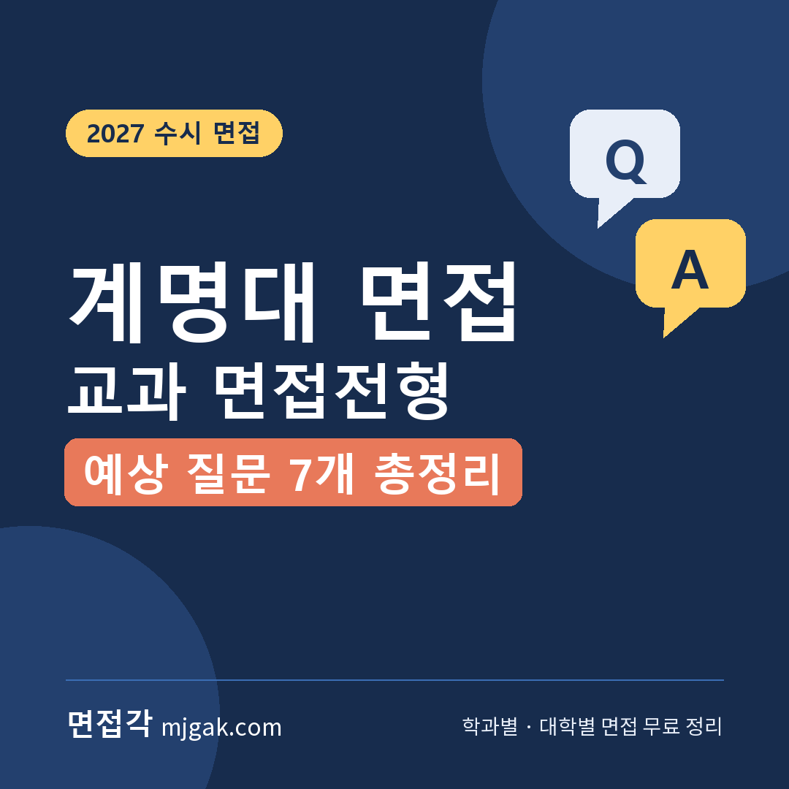
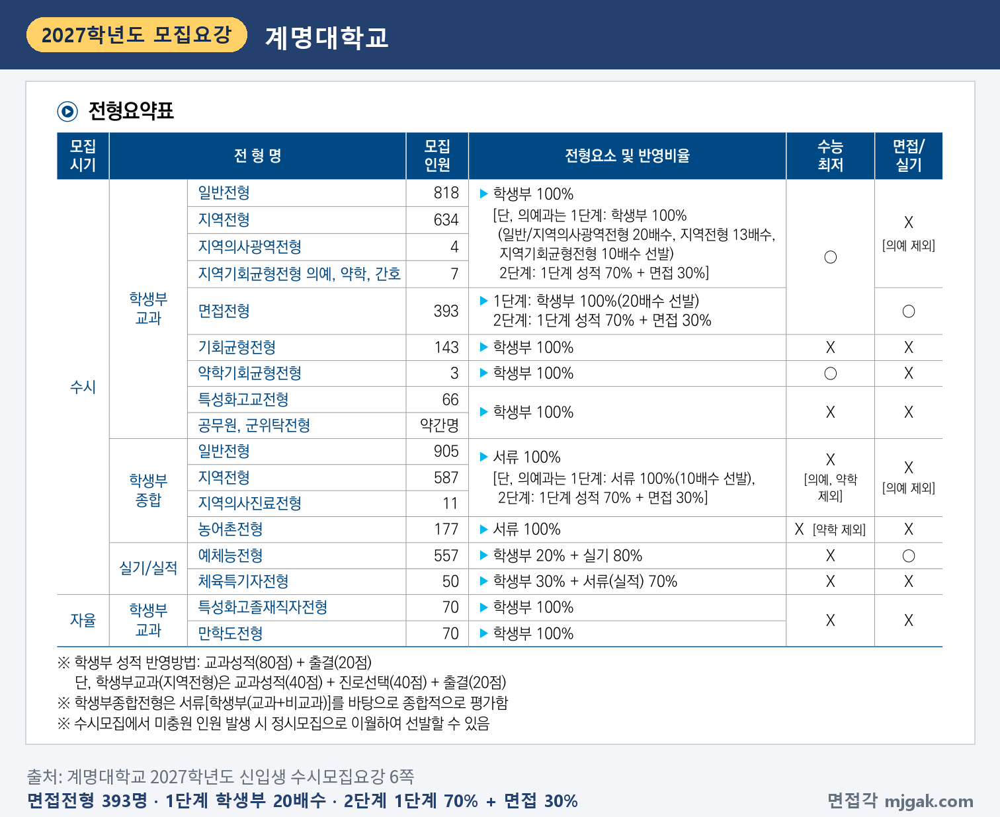
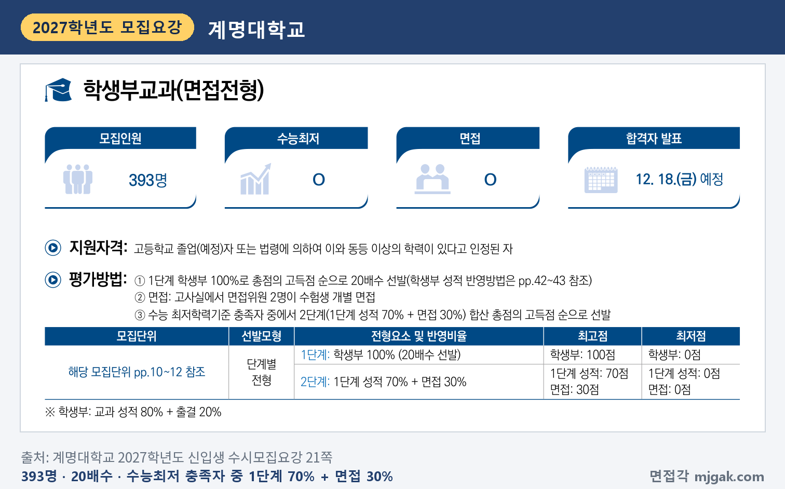
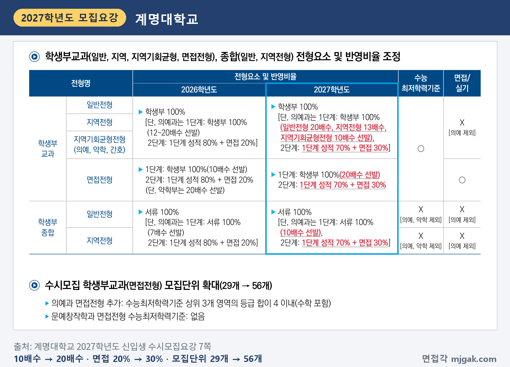
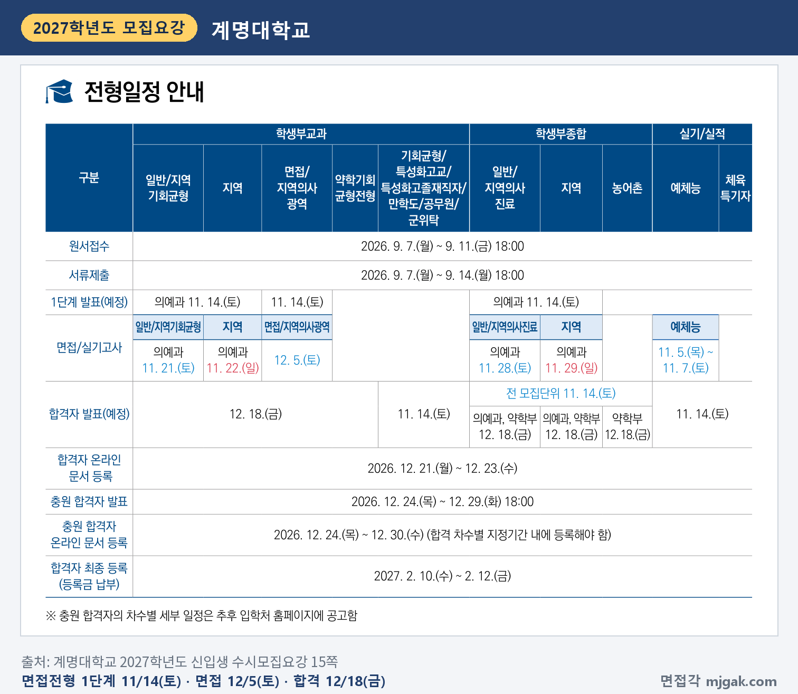
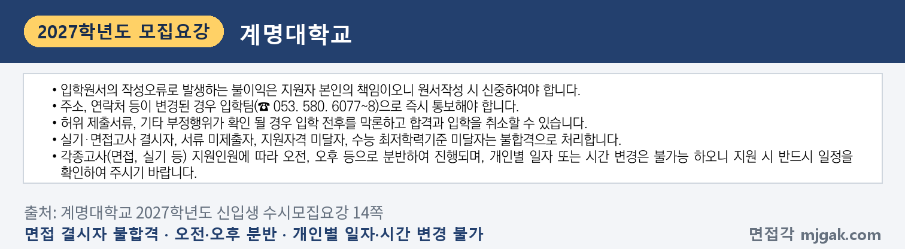
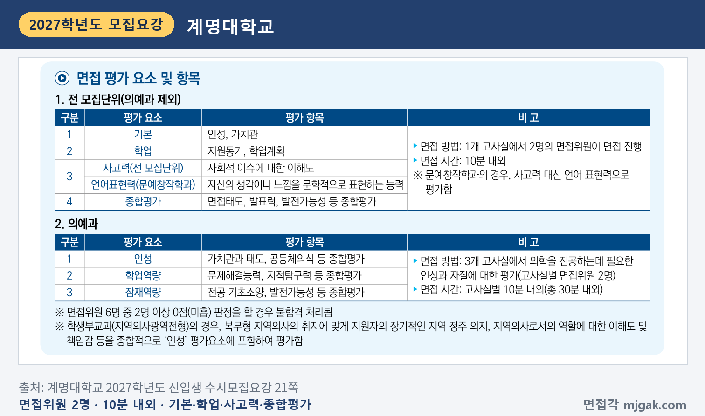
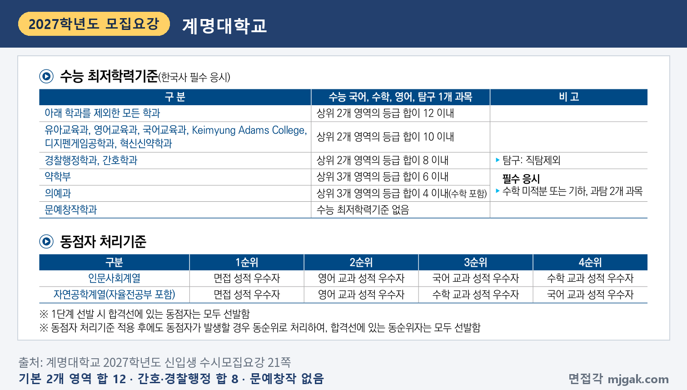
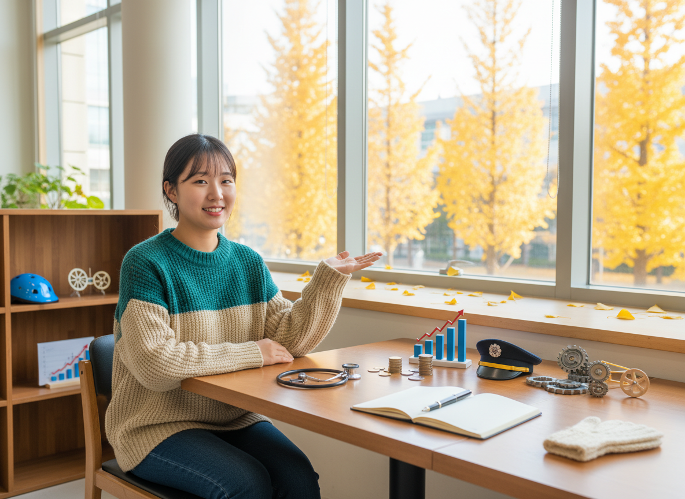
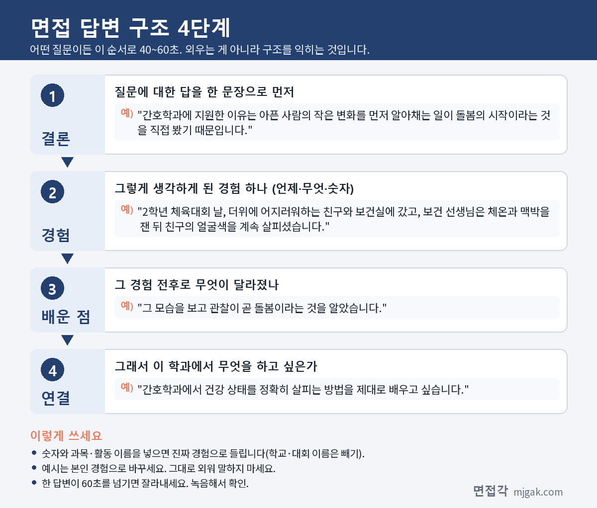

Ctrl+V (서식 유지됨)제목
본문 (이 영역 전체가 복사됩니다)
📷 여기에 이미지 넣기 — 썸네일 — thumb-keimyung.png (대표 이미지로 지정)
계명대 학생부교과(면접전형)에서 먼저 챙길 것은 1단계 발표가 수능보다 먼저라는 점입니다. 1단계 합격자 발표(예정)는 11월 14일(토), 수능은 11월 19일(목), 면접은 12월 5일(토)입니다. 1단계는 학생부 100%로 20배수를 뽑고, 2단계는 수능 최저학력기준을 충족한 사람 중에서 1단계 성적 70%와 면접 30%를 합산합니다. 면접은 고사실 하나에서 면접위원 2명이 수험생을 개별로 보는 10분 내외의 면접이고, 평가 항목에 "사회적 이슈에 대한 이해도"가 들어 있습니다. 2027학년도에는 면접전형 모집단위가 29개에서 56개로 늘고, 면접 비율이 20%에서 30%로 커졌습니다. 계명대학교 2027학년도 신입생 수시모집요강을 바탕으로 전형 방법과 일정, 면접 방식, 예상 질문 7개, 준비 순서를 정리하고 의예과 면접 전형들은 따로 묶었습니다. 면접전형 지원자가 읽으시면 됩니다.
1. 학생부교과(면접전형), 2027학년도에는 어떻게 보나
학생부교과(면접전형)는 393명을 뽑습니다(21쪽). 모집단위는 56개입니다(7쪽). 인원이 많은 곳은 자율전공부 40명, 간호학과 15명, 국제통상학과·기계공학과 각 12명, 경제금융학과·문예창작학과·언론영상학과 각 10명입니다. 의예과와 약학부도 각 5명을 이 전형으로 뽑습니다(10·11쪽). 지원자격은 고등학교 졸업(예정)자 또는 법령에 따라 같은 수준 이상의 학력을 인정받은 사람이고(21쪽), 전형요약의 지원자격 표에는 검정고시와 외국 고등학교 출신도 지원 가능으로 표시되어 있습니다(6쪽).
📷 여기에 이미지 넣기 — 캡처 1 — 계명대학교 2027학년도 신입생 수시모집요강 6쪽: keimyung-2027-summary.png
전형 방법은 1단계에서 학생부 100%로 20배수를 뽑고, 2단계에서 수능 최저학력기준 충족자 중 1단계 성적 70%와 면접 30%를 합산한 총점 순으로 뽑습니다. 학생부는 교과 성적 80%와 출결 20%입니다(21쪽). 이 글에서 모집인원에 20을 곱해 계산하면 1단계 합격 규모는 자율전공부(40명) 800명, 간호학과(15명) 300명, 7명을 뽑는 모집단위 140명입니다. 1단계 합격선의 동점자는 모두 선발합니다(21쪽).
📷 여기에 이미지 넣기 — 캡처 2 — 계명대학교 2027학년도 신입생 수시모집요강 21쪽: keimyung-2027-method.png
2026학년도와 비교하면 1단계가 10배수(약학부 20배수)에서 20배수로, 2단계가 1단계 성적 80% + 면접 20%에서 70% + 30%로 바뀌었습니다. 의예과가 면접전형에 새로 들어왔고, 문예창작학과의 면접전형은 수능 최저학력기준이 없습니다(7쪽).
📷 여기에 이미지 넣기 — 캡처 3 — 계명대학교 2027학년도 신입생 수시모집요강 7쪽: keimyung-2027-change.png
학생부 교과는 인문사회계열이 국어·수학·영어·사회(한국사 포함), 자연공학계열이 국어·수학·영어·과학 중 상위 3개 교과의 전 과목과 진로선택 상위 3개 과목을 반영합니다(의예과·약학부는 국어·수학·영어·과학·한국사 교과 전 과목). 자율전공부는 국어·수학·영어·사회(한국사 포함)/과학 중 상위 3개 교과를 보되 사회와 과학은 1개만 반영합니다. 성적과 출결은 3학년 1학기까지 반영합니다(졸업생 출결은 3학년 2학기까지). 출결은 20점에서 미인정 결석 1일당 1점, 미인정 지각·조퇴·결과 3회당 1점을 뺍니다(42쪽).
2단계 동점자는 면접 성적 우수자, 영어 교과 성적 우수자 순으로 가리고, 그다음은 인문사회계열이 국어·수학, 자연공학계열(자율전공부 포함)이 수학·국어 교과 성적 순입니다(21쪽). 면접평가에서 평가자 전원(의예과는 2명 이상)에게 미흡(F) 판정을 받으면 불합격입니다(46쪽). 전형료는 55,000원(의예과 75,000원)이고, 1단계에서 탈락하면 20,000원(의예과 25,000원)을 돌려줍니다(45쪽).
2. 언제 보나: 11월 14일(토) 1단계 발표, 12월 5일(토) 면접
일정은 날짜순으로 이렇습니다(수능을 뺀 날짜는 15쪽).
- 11월 14일(토): 1단계 발표(예정)
- 11월 19일(목): 수능
- 12월 5일(토): 면접
- 12월 18일(금): 합격자 발표(예정)
1단계 발표에서 면접일까지는 21일, 수능에서 면접일까지는 16일입니다(이 글에서 계산한 값). 1단계 합격 여부는 입학처 홈페이지(www.gokmu.ac.kr) 통합지원서비스에서 본인이 직접 확인해야 합니다(47쪽). 면접고사 결시자는 불합격입니다(14쪽).
📷 여기에 이미지 넣기 — 캡처 4 — 계명대학교 2027학년도 신입생 수시모집요강 15쪽: keimyung-2027-schedule.png
📷 여기에 이미지 넣기 — 캡처 5 — 계명대학교 2027학년도 신입생 수시모집요강 14쪽: keimyung-2027-notice.png
3. 면접은 어떻게 보나
의예과를 뺀 전 모집단위는 1개 고사실에서 면접위원 2명이 면접을 진행하고, 시간은 10분 내외입니다. 평가 요소와 항목은 다음과 같습니다(21쪽).
- 기본: 인성, 가치관
- 학업: 지원동기, 학업계획
- 사고력: 사회적 이슈에 대한 이해도 (문예창작학과는 사고력 대신 언어표현력: 자신의 생각이나 느낌을 문학적으로 표현하는 능력)
- 종합평가: 면접태도, 발표력, 발전가능성 등 종합평가
모집요강에 평가 요소별 배점이나 반영비율은 적혀 있지 않습니다.
📷 여기에 이미지 넣기 — 캡처 6 — 계명대학교 2027학년도 신입생 수시모집요강 21쪽: keimyung-2027-interview.png
수능 최저학력기준(한국사 필수 응시)은 국어·수학·영어·탐구 1개 과목 중 아래 학과를 뺀 모든 학과가 상위 2개 영역 등급 합 12 이내입니다. 유아교육과·영어교육과·국어교육과·Keimyung Adams College·디지펜게임공학과·혁신신약학과는 10 이내, 경찰행정학과·간호학과는 8 이내, 약학부는 상위 3개 영역 합 6 이내, 의예과는 상위 3개 영역 합 4 이내(수학 포함)이고, 문예창작학과는 없습니다. 탐구는 직탐을 제외하고, 약학부와 의예과는 수학 미적분 또는 기하, 과탐 2개 과목을 필수로 응시해야 합니다(21쪽).
📷 여기에 이미지 넣기 — 캡처 7 — 계명대학교 2027학년도 신입생 수시모집요강 21쪽: keimyung-2027-minimum.png
4. 평가 항목에서 나올 예상 질문 7개와 답변법
계명대는 모집요강에 면접 질문 예시를 공개하지 않았습니다. 아래 7개는 21쪽의 평가 요소와 항목으로 정리한 예상 질문입니다. 괄호의 평가 요소 연결은 이 글에서 한 것이고, 예시 답변은 모집단위를 바꿔 가며 쓴 가상의 예시이니 반드시 본인 경험으로 바꾸세요.
▶ 질문 1. 이 학과에 지원한 동기는 무엇인가요? (학업: 지원동기)
왜 묻나: 평가 요소 '학업'의 첫 항목이 지원동기입니다.
답변 구조: 지원 이유 한 문장 → 계기가 된 학교생활 장면 → 그때 알게 된 것 → 학과에서 배울 것.
답변 예시 (간호학과):
"간호학과에 지원한 이유는 아픈 사람의 작은 변화를 먼저 알아채는 일이 돌봄의 시작이라는 것을 직접 봤기 때문입니다. 2학년 체육대회 날, 더위에 어지러워하는 친구와 함께 보건실에 갔습니다. 보건 선생님은 체온과 맥박을 잰 뒤 물을 조금씩 나눠 마시게 하면서 친구의 얼굴색을 계속 살피셨습니다. 그 모습을 보고 관찰이 곧 돌봄이라는 것을 알았고, 간호학과에서 건강 상태를 정확히 살피는 방법을 제대로 배우고 싶습니다."
주의: "어릴 때부터 꿈이었습니다"로 끝내지 말고, 계기가 된 장면 하나를 붙이세요.
▶ 질문 2. 입학하면 무엇을 공부할지 학업계획을 말해 보세요. (학업: 학업계획)
왜 묻나: '학업'의 두 번째 항목이 학업계획입니다. 자율전공부는 입학 후 1년간 진로탐색 과정을 거쳐 2학년 진급 때 희망 학과로 진학하는 학부입니다. 다만 경찰행정학과는 50명, 혁신신약학과는 15명 이내만 1년간의 성적 순으로 배정합니다(12쪽).
답변 구조: 1년 안에 할 것 → 그다음 할 것 → 그렇게 정한 이유 → 고교 경험과 연결.
답변 예시 (자율전공부):
"자율전공부에서 1년 동안 사람의 마음과 데이터를 함께 다루는 전공을 찾고 싶습니다. 고등학교 때 학급 설문을 정리하면서, 숫자 뒤에는 사람마다 다른 이유가 있다는 것을 느꼈습니다. 1학기에는 통계와 심리에 관련된 강의를 찾아 듣고, 2학기에는 두 분야 선배들에게 실제 수업과 진로를 물어볼 계획입니다. 그렇게 확인한 내용을 근거로 2학년 진급 때 학과를 고르겠습니다."
주의: 자율전공부 지원자는 "아직 정하지 못했습니다"로 끝내지 말고 1년 동안 무엇을 확인할지를 말하세요. 학과 지원자는 배우고 싶은 과목 하나, 해 보고 싶은 것 하나로 말하세요.
▶ 질문 3. 지원 학과와 관련된 사회적 이슈 하나를 골라 본인의 생각을 말해 보세요. (사고력: 사회적 이슈에 대한 이해도)
왜 묻나: 의예과를 뺀 전 모집단위의 '사고력' 평가 항목이 "사회적 이슈에 대한 이해도"입니다.
답변 구조: 이슈를 사실로 한 문장 → 내 의견 → 근거 → 학과 공부와 연결.
답변 예시 (경찰행정학과):
"제가 관심 있게 본 이슈는 전동킥보드 안전 문제입니다. 학교 앞에서도 헬멧 없이 두 명이 함께 타는 모습을 여러 번 봤습니다. 저는 단속만 늘리기보다 안전 교육을 함께 해야 한다고 생각합니다. 단속은 단속하는 자리에서만 효과가 있지만, 왜 위험한지 아는 사람은 단속이 없는 곳에서도 조심하기 때문입니다. 경찰행정학과에서 교통 법규와 범죄 예방 정책을 배워, 규칙이 실제로 지켜지게 하는 방법을 공부하고 싶습니다."
주의: 숫자나 통계는 출처를 정확히 아는 것만 쓰세요.
📷 여기에 이미지 넣기 — 이미지 1 — 제미나이 생성: 노란 은행잎이 보이는 창가 라운지에서 청진기·경찰 모자 모형·동전과 라벨 없는 막대그래프·금속 기어·빈 줄 노트 옆에서 답하는 여학생(실사) / "제미나이 프롬프트 1" · gem-keimyung-1.png
(AI로 만든 이미지로, 실제 캠퍼스와 다를 수 있습니다)
▶ 질문 4. 방금 말한 의견에 반대하는 사람이 있다면 어떻게 설명하겠습니까? (사고력, 종합평가: 발표력)
왜 묻나: 앞 답변에 이어 묻는 형태의 예상 질문입니다. 평가 항목인 "사회적 이슈에 대한 이해도"와 종합평가의 "발표력"에 연결해 이 글에서 만든 질문입니다.
답변 구조: 반대 의견에서 맞는 부분 인정 → 내 근거 → 절충안 → 학과 공부와 연결.
답변 예시 (경제금융학과):
"저는 매장에서 현금 결제를 없애더라도 현금으로 낼 수 있는 방법은 하나 남겨야 한다는 의견입니다. 현금을 관리하는 데 비용이 든다는 반대 의견이 있다면, 그 점은 맞다고 먼저 말씀드리겠습니다. 다만 카드나 앱이 익숙하지 않은 손님이 물건을 사지 못하면 매장도 손님을 잃는다는 점을 함께 설명하겠습니다. 그래서 계산대 한 곳만 현금을 받는 절충안을 제안하겠습니다. 경제금융학과에서 결제 방식의 변화가 소비자에게 미치는 영향을 배우고 싶습니다."
주의: 반대 의견을 깎아내리지 마세요. 맞는 부분을 먼저 인정한 뒤 내 근거를 말하면 됩니다.
▶ 질문 5. 학교생활에서 스스로 지키려고 한 원칙이 있나요? (기본: 인성, 가치관)
왜 묻나: 평가 요소 '기본'의 항목이 인성과 가치관입니다.
답변 구조: 원칙 한 문장 → 그 원칙을 지키기 어려웠던 장면 → 내가 한 행동 → 배운 점과 학과 연결.
답변 예시 (사회복지학과):
"제 원칙은 한 번 맡은 일은 끝까지 한다는 것입니다. 1학년 때부터 지역아동센터에서 토요일마다 초등학생 숙제를 도왔습니다. 시험 기간에는 빠지고 싶었지만, 제가 맡은 아이가 토요일을 기다린다는 말을 듣고 시간을 줄여서라도 나갔습니다. 그 아이가 받아쓰기 점수를 처음 자랑하던 날, 꾸준히 곁에 있는 것이 도움의 기본이라는 것을 배웠습니다. 사회복지학과에서 아동복지를 공부하고 싶습니다."
주의: 원칙은 하나만 고르세요. 여러 개를 나열하면 장면이 사라집니다.
▶ 질문 6. 친구나 모둠원과 의견이 맞지 않았을 때 어떻게 했나요? (기본: 인성)
왜 묻나: '기본'의 인성 항목과 이어지는 예상 질문입니다.
답변 구조: 상황과 갈린 의견 → 내가 제안한 것 → 결과 → 그 뒤 달라진 점.
답변 예시 (기계공학과):
"물리 수업에서 네 명이 고무동력 자동차를 만들 때, 바퀴를 크게 하자는 친구와 차체를 가볍게 하자는 친구의 의견이 갈렸습니다. 저는 말로 정하기보다 두 방법을 하나씩 만들어 같은 거리에서 시험해 보자고 제안했습니다. 차체를 가볍게 한 쪽이 더 멀리 갔고, 큰 바퀴를 주장한 친구도 결과를 보고 동의했습니다. 의견이 다를 때는 확인할 방법부터 정하는 것이 좋다는 것을 배웠고, 기계공학과에서 설계를 실험으로 검증하는 방법을 배우고 싶습니다."
주의: 누가 틀렸는지보다 내가 한 행동에 시간을 쓰세요.
▶ 질문 7. (문예창작학과) 면접장에 오는 길에 본 장면 하나를 짧게 표현해 보세요. (언어표현력)
왜 묻나: 문예창작학과는 사고력 대신 언어표현력, 곧 "자신의 생각이나 느낌을 문학적으로 표현하는 능력"을 평가합니다(21쪽). 이 항목에 맞춰 이 글에서 만든 예상 질문입니다.
답변 구조: 구체적인 사물 하나 → 그 사물에 빗댄 느낌 → 내가 한 행동이나 생각 → 내 글쓰기와 연결.
답변 예시 (문예창작학과):
"버스 정류장 의자에 누가 두고 간 털장갑 한 짝이 있었습니다. 한쪽 손만 따뜻하게 겨울을 보낼 누군가를 떠올리니, 장갑이 주인을 기다리며 앉아 있는 것처럼 보였습니다. 저는 그 장갑을 등받이 위, 눈에 잘 띄는 곳으로 옮겨 두고 왔습니다. 잃어버린 것과 남겨진 것 사이에 이야기가 있다고 생각해서, 이런 장면을 모아 짧은 소설로 쓰고 있습니다."
주의: 꾸미는 말을 많이 붙이기보다 사물 하나에 느낌을 담으세요.
5. 답변은 이 4단계로 만드세요
어떤 질문이든 결론 → 경험 → 배운 점 → 연결 순서로 40~60초 안에 말하세요. 아래 도식은 질문 1을 4단계로 쪼갠 것입니다.
📷 여기에 이미지 넣기 — 도식 — structure-keimyung.png
6. 의예과 면접은 전형마다 날짜와 방식이 다릅니다
의예과는 면접전형 5명 외에 학생부교과 일반(6명)·지역(23명)·지역기회균형(2명)·지역의사광역(4명), 학생부종합 일반(6명)·지역(22명)·지역의사진료(11명)에서도 면접을 봅니다(11쪽). 모두 2단계는 1단계 성적 70% + 면접 30%이고, 1단계 발표는 11월 14일(토) 예정입니다(15쪽). 공통으로 한국사를 필수 응시하고, 수학 미적분 또는 기하와 과탐 2개 과목을 필수로 응시해야 합니다.
- 12월 5일(토) 면접전형·지역의사광역전형: 1단계 학생부 20배수, 3개 고사실(고사실별 면접위원 2명)에서 고사실별 10분 내외(총 30분 내외)로 인성·학업역량·잠재역량을 봅니다. 면접위원 6명 중 2명 이상 0점(미흡) 판정을 하면 불합격입니다. 지역의사광역전형은 장기적인 지역 정주 의지, 지역의사로서의 역할에 대한 이해도와 책임감을 '인성'에 포함해 평가합니다(19·21쪽). 수능 최저는 둘 다 상위 3개 영역 합 4 이내(수학 포함)입니다.
- 11월 21일(토) 교과 일반·지역기회균형, 11월 22일(일) 교과 지역: 1단계 일반 20배수, 지역 13배수, 지역기회균형 10배수이고, 3개 고사실에서 인성·상황·모의상황 면접을 합니다(16·18·20쪽). 수능 최저는 일반 3합 3, 지역 3합 4(수학 포함), 지역기회균형 3합 5(수학 포함)입니다.
- 11월 28일(토) 종합 일반·지역의사진료, 11월 29일(일) 종합 지역: 1단계 서류 10배수이고, 인성·서류검증 2개 고사실을 차례로 거칩니다. 고사실별 10분(총 20분 내외), 면접위원 4명의 점수 평균을 반영합니다(24~27쪽). 수능 최저는 일반·지역 3합 4, 지역의사진료 3합 5(모두 수학 포함)입니다.
면접일이 같은 교과 일반과 지역기회균형, 교과 면접전형과 지역의사광역, 종합 일반과 지역의사진료에는 의예과를 함께 지원할 수 없습니다(14쪽). 2027학년도에 새로 생긴 지역의사광역·지역의사진료전형으로 입학하면 의사 면허를 취득하는 순간부터 최소 10년간 정부가 지정한 의무복무지역의 의료기관에서 근무해야 하고, 이 조건을 위반하면 면허가 정지 또는 취소될 수 있습니다(8쪽).
7. 1단계 발표 전부터 면접 당일까지 준비 순서
11월 13일(금)까지: 수능 공부가 먼저이니 주말에 조금씩 합니다. 질문 1·2의 답변 초안을 만들고, 지원 학과와 관련된 사회 이슈 두 개를 골라 "사실, 내 의견, 근거"를 한 줄씩 적어 둡니다.
11월 14일(토), 1단계 발표(예정): 입학처 홈페이지 통합지원서비스에서 합격 여부를 직접 확인합니다(47쪽).
11월 15일(일) ~ 11월 18일(수): 수능 마무리에 집중합니다.
11월 19일(목): 수능.
11월 20일(금) ~ 11월 26일(목): 질문 3·4를 내가 고른 이슈로 다듬고, 10분을 재며 모의 면접을 한 번 녹음합니다. 60초를 넘는 답, 근거 없이 숫자를 말한 답을 표시합니다.
11월 27일(금) ~ 12월 3일(목): 표시한 답을 고치고 질문 5·6을 연습합니다. 문예창작학과 지원자는 매일 본 장면 하나를 세 문장으로 말해 봅니다. 면접 시간과 장소는 입학처 홈페이지에서 확인합니다.
12월 4일(금): 새 답변은 만들지 않고, 가는 길을 확인합니다.
12월 5일(토), 면접: 결시하면 불합격이니 일찍 출발합니다(14쪽).
12월 18일(금), 합격자 발표(예정): 합격했다면 12월 21일(월) ~ 23일(수) 온라인 문서 등록을 놓치지 마세요(15쪽).
8. 계명대 면접전형 자주 묻는 것들
Q. 수능 최저가 있나요?
A. 문예창작학과를 뺀 모든 모집단위에 있고, 2단계는 최저 충족자 중에서 선발합니다(21쪽).
Q. 다른 전형과 같이 지원할 수 있나요?
A. 계명대 수시모집 전형 간에는 6개까지 복수지원이 가능하고, 같은 전형 안에서는 1개 모집단위에만 지원할 수 있습니다. 다만 의예과는 면접일이 같은 면접전형과 지역의사광역전형에 함께 지원할 수 없습니다(14·46쪽).
Q. 면접 날짜나 시간을 바꿀 수 있나요?
A. 안 됩니다. 지원인원에 따라 오전·오후 등으로 나눠 진행하고 개인별 일자나 시간은 바꿀 수 없습니다(14·15쪽).
Q. 제시문을 읽고 푸는 문제가 나오나요?
A. 모집요강에 제시문이나 문제 풀이 안내는 없습니다. 평가 요소는 기본, 학업, 사고력(문예창작학과는 언어표현력), 종합평가입니다(21쪽).
Q. 면접 복장은 어떻게 하나요?
A. 모집요강에는 면접 복장 규정이 없습니다.
9. 면접 전날 체크리스트
□ 지원동기와 학업계획을 각각 60초 안에 말할 수 있다
□ 지원 학과와 관련된 사회 이슈 두 개를 사실·의견·근거로 말할 수 있다
□ 내 의견에 대한 반대 의견 하나와 그에 대한 답을 준비했다
□ 지킨 원칙 하나, 의견이 갈렸을 때 한 행동 하나를 장면으로 말할 수 있다
□ 답변에 출처를 모르는 숫자가 들어가지 않았는지 녹음으로 확인했다
□ 입학처 홈페이지에서 면접 시간과 장소를 확인했다
□ 결시하면 불합격이니 가는 길과 걸리는 시간을 확인했다
10. 같은 시기에 면접 보는 대학
계명대 면접전형과 같은 12월 5일에 면접을 보는 대학입니다.
▷ 부산대 학생부종합전형·지역인재전형 면접 총정리 (12월 5일)
▷ 가톨릭대 잠재능력우수자면접전형 면접 총정리 (12월 5일)
▷ 단국대 DKU인재(면접형) 면접 총정리 (12월 5일·6일)
11. 함께 보면 좋은 글
계명대 면접전형은 10분 내외 동안 지원동기·학업계획과 사회적 이슈에 대한 내 생각(문예창작학과는 언어표현력)을 말하는 면접입니다.
※ 이 글의 내용은 계명대학교 2027학년도 신입생 수시모집요강에서 인용했습니다. 괄호 안 쪽수는 모집요강에 인쇄된 쪽수입니다. 예상 질문은 모집요강의 평가 요소와 항목을 바탕으로 정리한 것이며 대학이 공개한 질문이 아닙니다. 면접 시간과 장소는 계명대 입학처 홈페이지 공지를 꼭 확인하세요.
계명대를 포함한 76개 대학의 2027학년도 면접 정보와 71개 학과별 면접 질문·답변 예시, 대학이 공개한 실제 면접 기출을 무료로 정리한 사이트입니다. 회원가입 없이 바로 볼 수 있고, 질문을 무작위로 뽑아 60초 타이머로 연습하는 모의 면접도 있습니다.
태그 (#은 에디터가 자동으로 붙이므로 그대로 붙여 넣어도 됩니다)
넣을 이미지 목록 (docs/promo/img 폴더)










제미나이 프롬프트 1 — 노란 은행잎이 보이는 창가 라운지에서 청진기·경찰 모자 모형·동전과 라벨 없는 막대그래프·금속 기어·빈 줄 노트 옆에서 답하는 여학생(실사) (4:3) — 제미나이에 그대로 붙여 넣어 이미지를 만드세요